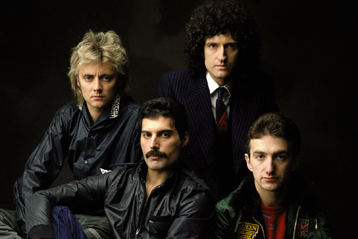

Zpěv a klavír. Charismatický frontman s nezaměnitelným hlasem a energickým vystupováním na pódiu. Při vystoupeních často interagoval s publikem a dělal tak z koncertů nezapomenutelné show.
Kytara a zpěv. Slavný kytarista známý svou podomácku vyrobenou kytarou "Red Special", kterou vyráběl se svým tátou. Dříve než se stal hvězdou, studoval astrofyziku a hrál po barech se skupinou Smile společně s Rogerem Taylorem.
Bicí a zpěv. Rytmické srdce kapely a autor mnoha hitů jako Radio Ga Ga. Před Queen hrál ve spousta menších kapelách, také s Brianem ve Smile, ze které se později stala Queen.
Baskytara. Tichý člen kapely, autor basových linek u megahitů jako Another One Bites the Dust. Nikdy nepůsobil výrazně, ale jeho schopnost umět hrát na kytaru a skládat písně byl klíč k úspěchu kapely.